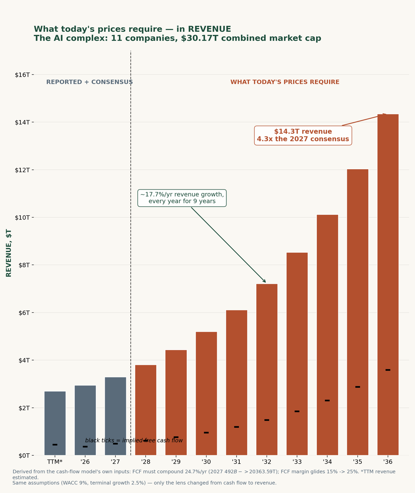
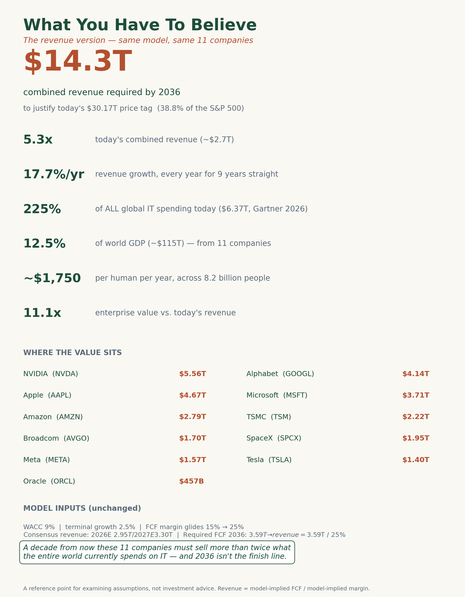

Mon–Fri · 1:35 PM PT
GLW — Corning Inc.
Price action vs key levels: support $158–160; resistance $166–169, $176, $200.
Watching fiber deals, earnings, the $2B ATM program, and analyst rating changes.
Finance × AI
I'm Dinesh — a science master's graduate building a career in investing and portfolio management. CFA track. Documenting every step in public.
I trained as a scientist — a master's in science taught me how to research, model, and stay honest with data. Now I'm applying that same discipline to markets.
My focus is investing and portfolio management: fundamental analysis, valuation, and building a personal track record of ideas and decisions.
Where my hours are going, this season.
Working through the CFA curriculum toward the charter — the backbone of my move into finance.
Stacking practical, fast certifications along the way — FMVA and Bloomberg Market Concepts — to build working skills while the CFA runs in the background.
Building a finance-themed virtual AI influencer — part experiment, part portfolio of what AI can do for content.
Daily tracking and analysis of names I'm studying, including Corning (GLW) and Nokia (NOK) — price action, catalysts, and levels.
Daily market watch — scheduled tasks I run every trading day, Mon–Fri around 1:35 PM PT (post-close).
Mon–Fri · 1:35 PM PT
Price action vs key levels: support $158–160; resistance $166–169, $176, $200.
Watching fiber deals, earnings, the $2B ATM program, and analyst rating changes.
Mon–Fri · 1:35 PM PT
Price action vs key levels: support $9.00–9.50; resistance $10.50–11.00, $14–15, $17.45, $21.
Watching optical/AI orders, the Google Cloud Gemini partnership, Euro Stoxx 50 inclusion, and analyst rating changes.
Sep 17, 2026 · Market note

The chart needs no interpreter. Treasury yield curves from September 2020 to September 2026 — the axes and header say it all. Six lines, six years, one unmistakable direction: up.
Look at the long end — the 10Y to 30Y rates. In September 2020, the 10-year yielded under 1% and the 30-year around 1.5%. Today the 10-year sits at 5.014% and the 20/30-year above 5.3%. In six years, long-term borrowing costs have more than tripled. That is the trend that matters, because long-term rates shape everyday life far more than the overnight rate ever will.
This is everyone's business. For years the US government has been borrowing on a massive scale — chronic deficits, relentless spending, a growing mountain of debt. Flood the market with bonds while inflation runs hot, and the bond market demands higher long-term interest in return. That top line on the chart is the market repricing the government's borrowing habit.
And it lands on households. The 30-year mortgage follows the 10-year yield. When long-term rates triple, the monthly payment on the same house balloons — buyers get priced out, owners can't refinance, affordability erodes across the board.
Bottom line: government borrowing pushed long-term rates from ~1% to 5%+, the bond market adjusted, and housing got dramatically more expensive. We are being affected — in our mortgages, our savings, our cost of living. And as long as the borrowing continues, we will keep being affected.
Chart: GuruFocus.com. Analysis for learning — not financial advice.
Sep 21, 2026 · Market analysis
A viral reel drew the 1929 crash, the 2000 crash, and then a third crash in 2026 — with the red line already collapsing and “WE ARE HERE” stamped at the peak. Two of those crashes are history. The third is a guess wearing a costume. Nobody can draw the future from a meme, but there are gauges that warn before recessions and crashes. Here are five of them, read as of the Sep 18, 2026 close — the honest version of that chart. Educational analysis, not financial advice.
The 10-year sits near 5.0% (a 19-year high touched on Sep 15), the 2-year near 4.72% — a positively sloped curve, +26 to +28 basis points. An inverted curve (short rates above long) has preceded every modern US recession, because it means investors are fleeing to safety. This one isn’t flashing. (The full backstory is in my yield-curve piece.)
The S&P 500 closed at 7,650.50, near all-time highs, at roughly 28x trailing earnings. The Shiller CAPE — the inflation-adjusted 10-year average — is around 40.7–41.3, the second-highest reading in ~155 years, behind only the dot-com peak of 44.2. Historically, starting valuations this rich have meant thin long-run returns. The caveat: CAPE predicts the next decade, not the next quarter — it’s a compass, not a timer.
When investors start fearing defaults, they demand extra yield over Treasuries and spreads blow out — high-yield spreads hit ~2,100 bps in 2008. Today they’re around 277 bps, near multi-decade tights. No fear in corporate credit. But tights can cut both ways: they mean calm now, and complacency priced in.
Unemployment is 4.1%, with payrolls adding 162K in August — about five times the recent average pace. The Sahm rule, the recession indicator that fires when unemployment’s 3-month average rises half a point above its 12-month low, is not triggered. Recessions kill earnings; this gauge says the consumer’s paycheck is still intact.
The Fed hiked to 3.75–4.00% on Sep 16 — the first hike since July 2023, driven by oil-driven inflation (Iran conflict, WTI near $96, Brent over $105) — and its projections imply another hike this year. The NY Fed’s 12-month recession model sits near 15% (a slightly stale read; the steeper current curve implies lower now), the Conference Board’s leading index ticked down 0.1% in August with growth “expected to slow,” and consumer sentiment just fell to 47.8, near record lows. People are nervous even while the hard data holds up.
Three gauges say calm (curve, credit, jobs), three say caution (valuations, rates, sentiment) — and they point in different directions, which is exactly the point. A real checklist looks like this: mixed signals, honest caveats, no prophecy. The reel’s trick is drawing the crash first and calling it “here.” The gauges say we’re in expensive-but-expanding territory — the kind of market that deserves humility, not panic. The next time a chart tells you a crash has already been scheduled, ask which gauge it read. This one answered: none of them.
Values: 10Y/2Y yields via WSJ/Tradeweb (Sep 18–21); S&P 500 7,650.50 and VIX 14.81 via Cboe (Sep 18 close); forward P/E 19.21 via FactSet/MarketWatch (Sep 12); Shiller CAPE ~40.7–41.3 via YCharts/Motley Fool; HY OAS 277 bps (B-rated subset, FRED, Sep 17); unemployment 4.1% via BLS (Aug, released Sep 4); Fed funds 3.75–4.00% after the Sep 16 FOMC hike; NY Fed 12-mo recession probability ~15.2% (Aug publication, based on July spread — slightly stale); LEI 99.5 via Conference Board (Sep 18); sentiment 47.8 via U. Michigan (Sep 11). Some readings are approximate and all move daily — this is a snapshot, not a standing quote. Educational analysis — not financial advice.
Sep 17, 2026 · Market note
What happened. On September 16, the Federal Reserve raised its benchmark rate a quarter point to 3.75–4% — the first hike since July 2023, and a unanimous vote under Chair Warsh. The reason: inflation running hot on the Iran war, roughly $100 oil, and the AI buildout.
What they’re saying. Mike Madowitz (Roosevelt Institute) says this is unlikely to be the last hike — with unemployment near 4% and core PCE forecast at 3.5%, the Fed can’t look away from inflation — but warns rate hikes are a costly, blunt tool against this kind of inflation. Andrzej Skiba (RBC) notes risk assets didn’t love the outcome; hopes for “one and done” faded, though Warsh’s clear messaging could support longer-term Treasury prices. Krishna Guha (Evercore ISI) called the press conference coherent, confident, and consistently hawkish — stern on inflation, upbeat on growth strengthening since the summer.
“This is unlikely to be the end of Fed rate hikes …. It’s hard to look at roughly 4% unemployment and a core PCE forecast of 3.5% and say the Fed shouldn’t be focused on inflation. But monetary policy looks like a really costly way to solve this problem right now.”
— Mike Madowitz, principal economist at the Roosevelt Institute
“Risk assets were not enamored with the outcome of today’s FOMC. Hopes of limited hikes ahead faded in the face of the Fed’s resolve to address inflation. Still, after the initial reset, we believe Chair Warsh’s clear messaging could actually help support Treasury prices further out the curve.”
— Andrzej Skiba, head of the BlueBay U.S. Fixed Income team at RBC Global Asset Management
“Warsh’s press conference was coherent, confident and consistently hawkish without coming across as crazily so. He balanced a stern but disciplined message on inflation with an upbeat take on growth which he said has been strengthening since the start of the summer.”
— Krishna Guha, head of economics and central bank strategy at Evercore ISI
Quotes via CNBC, Sep 16, 2026.
The stock market math. Higher rates raise the discount rate on future earnings, so valuations compress — and high-P/E growth stocks feel it most. From my own quality-growth screen: names like ANET (~62x earnings) and FTNT (~54x) are more rate-sensitive than cheaper stocks.
Winners and losers. Banks tend to gain from wider lending margins. Dividend payers, utilities, and REITs suffer as bonds pay more. Small caps and debt-heavy companies feel higher borrowing costs directly.
What actually moves stocks now. The hike was 93% priced in, so the initial reaction was muted — markets stayed steady. What matters is the path: the Fed’s projections point to another hike this year, so every CPI report and oil price swing counts double. The risk Madowitz flags is overtightening — squeeze too hard and growth, then earnings, take the hit.
Sources: Fed statement Sep 16, 2026; CNBC. Educational only — not financial advice.
Sep 18, 2026 · CFA study note
These are my handwritten CFA notes on portfolio management: how to measure risk and return, price risk with CAPM, mix two risky assets, buy on margin, and value a mutual fund. Every formula below is worked through with a number — including one arithmetic slip in my own notes, corrected here.
Standard deviation is the square root of variance. Correlation (ρ) tells you how two assets move together — and it is where diversification comes from:
σ = √σ² · σ² = w₁²σ₁² + w₂²σ₂² + 2w₁w₂σ₁σ₂ρRisk premium and excess return are the same idea: return above the risk-free rate. Everything in portfolio theory is built on it.
Risk premium = E(Rp) − rf · Excess return = ri − rfCAPM says expected return is the risk-free rate plus beta times the market premium. Beta is a weighted average of the portfolio's parts: β = 1 means market risk, β > 1 is aggressive, β < 1 is defensive.
E(Rp) = rf + βp(rm − rf) · βp = w₁β₁ + w₂β₂Alpha is actual return minus the CAPM return — what you earned beyond what your risk deserved. Positive alpha means active outperformance; zero means passive; negative means you lagged.
α = E(Ri) − CAPMWorked example 1. A security returns 12%. Risk-free rate is 5%, beta is 0.8, market premium is 10%. CAPM = 5% + 0.8 × 10% = 13%. Alpha = 12% − 13% = −1%. The security underperformed its risk-adjusted benchmark by one point.
There is a formula for the optimal risky portfolio — the mix of (say) a stock and a bond that maximizes the Sharpe ratio. Rb and Rs are excess returns:
wb = [Rbσs² − Rsσbσsρ] / [Rbσb² + Rsσs² − (Rb+Rs)σbσsρ]Worked example 2. Stock: expected return 35%, σ 25%. Bond: expected return 15%, σ 10%. Correlation 30%, risk-free 5%. Excess returns: Rb = 10%, Rs = 30%.
The Sharpe ratio is the slope of the Capital Allocation Line (CAL) — return per unit of risk. The tangent point where the CAL touches the efficient frontier is this optimal portfolio: 22.2% expected return at 12.5% risk.
R-squared splits total risk into two buckets: systematic risk (the market's, measured by β²σm²/σp² = ρ²) and idiosyncratic risk (1 − R²) — the part diversification can wash away.
R² = βp²σm² / σp² · Idiosyncratic risk = 1 − R²Margin is equity divided by assets. Buy $15,000 of stock with $7,500 borrowed at 10% and $7,500 of your own, and your initial margin is (15,000 − 7,500 − 750) / 15,000 = 45%. (My handwritten notes say 95% here — an arithmetic slip; 6,750 / 15,000 is 45%.)
Margin = Equity / Assets = (Assets − debt) / AssetsWorked example 3. Maintenance margin is 30%.
Net asset value is what one fund share is worth: assets minus liabilities, divided by shares outstanding.
NAV = (Assets − liabilities) / shares outstandingWorked example 4. Assets = 10,000 × 100 + 50,000 × 85 + 40,000 × 60 = 7,650,000. Liabilities = 350,000 + 100,000 = 450,000. Shares outstanding = 100,000. NAV = (7,650,000 − 450,000) / 100,000 = 72.
Worked example 5 — the no-dilution proof. A fund holds 500m in assets, owes 100m, has 40m shares: NAV = (500 − 100) / 40 = 10. A new investor buys 5m shares at NAV, paying 50m. Assets become 550m, shares become 45m: NAV = (550 − 100) / 45 = 10. Because newcomers buy at NAV, existing holders are untouched — that is the whole point of daily NAV pricing.
Fund return over a period, net of expenses: (Assetsend − Assetsbeg − expenses) / Assetsbeg.
Study notes for CFA prep, transcribed from my handwritten sheets — not financial advice.
Sep 21, 2026 · Book note
Brian Feroldi shared a summary of Pat Dorsey’s The Five Rules for Successful Stock Investing (2004) — Dorsey ran Morningstar’s equity research and popularized the “economic moat” idea there. The book’s subtitle is Morningstar’s Guide to Building Wealth and Winning in the Market, and the five rules are a solid checklist. But a checklist is only useful if you grade yourself against it — so here’s each rule, and what my own quality-growth screen (P/E > 30, ROE > 25%, positive EPS, 3-year profit growth > 20%) gets right and skips. Educational — not financial advice.
The rule: understand what you own and why — the business model, financials, industry, and risks before buying. My screen’s grade: incomplete. A screen is the opposite of homework; its job is to narrow fourteen semiconductor companies to one name worth actually studying. The homework starts where the screen ends. Passing the filter is a reason to research, never a reason to buy.
The rule: ignore quarterly noise; underwrite a 3–5 year thesis. My screen’s grade: pass. The 3-year profit-growth bar is the quantitative shadow of this rule — it refuses companies that can’t show multi-year compounding, and it’s why the leaderboard article’s momentum names all failed. The filter can’t supply the thesis, but it enforces the time horizon.
The rule: only companies with sustainable competitive advantages — brands, cost advantages, network effects, high switching costs — outperform over time. My screen’s grade: pass. Sustained 25%+ ROE is the footprint a moat leaves in the numbers; companies without one get competed back to average returns. This is the bar that does most of the real work in the screen — it’s why Fortinet’s 117% ROE made it the closest miss in the cybersecurity batch despite failing on growth.
The rule: valuation matters, even for great businesses — don’t overpay for growth; use DCFs, P/E, and multiples. My screen’s grade: half-skip. The P/E > 30 bar hunts expensive-but-proven compounders, not bargains — it finds the right businesses but drops the “at good prices” half of the book’s own subtitle (Buying Great Businesses at Good Prices). Dorsey would say the screen needs a second pass: once it names a quality business, run a DCF or check the PEG before paying up.
The rule: emotions are the enemy of returns — stick to your process; avoid fads, hype, and panic selling. My screen’s grade: not applicable — and that’s the point. No filter enforces discipline; the investor does. Friday’s Micron question was the live test: a great business on a tear, earnings two days out, and the discipline to treat it as speculation rather than let FOMO dress it up as investing. The screen is a tool of discipline only if you obey it when it says no.
The rule: the income statement can lie; the cash flow statement usually doesn’t — focus on free cash flow and quality of earnings. My screen’s grade: pass, with room to improve. Net-income growth can be flattered by accruals and one-offs (remember Western Digital’s 43x real multiple hiding behind a $6.5B one-time gain). A free-cash-flow version of the growth bar — or an accruals check — would be the natural upgrade.
Dorsey closes with the scoreboard: you’re not trying to win a lottery, you’re building wealth — steady returns and lower risk outperform over the long haul. That’s the whole philosophy behind running every hot list through the same four bars and accepting “zero pass” as an answer. The screen is Rules 2 and 3 enforced by arithmetic; Rules 1, 4, and 5 are still on me.
Based on Brian Feroldi’s summary of Pat Dorsey, The Five Rules for Successful Stock Investing (Morningstar, 2004). Educational — not financial advice.
Sep 21, 2026 · Resource
A viral infographic listed “30 free tools for investing” — but five names appear in both sections, so it’s really ~25, and “free” is generous for several (Seeking Alpha’s useful content is paywalled; Morningstar’s free tier is thin). Trimmed of duplicates and honest about the paywalls, here are the seven that cover ~90% of a real research workflow — including every number behind the articles on this page. All links verified live on Sep 21, 2026.
Clean fundamentals, ratios, and financial statements per ticker, free. Every P/E, ROE, and EPS figure in the semiconductor and cybersecurity screen articles came from here. The best first stop for any “run the numbers” question.
Screen thousands of stocks by P/E, ROE, growth, and more in seconds, plus the famous market heatmaps. The natural starting point for building a watchlist to run through a quality screen.
Official company filings: 10-Ks, 10-Qs, 13Fs. Every data site ultimately gets its numbers from here — when two sites disagree, EDGAR settles it. Free, straight from the regulator.
The St. Louis Fed’s database: Treasury yields, credit spreads, unemployment, inflation — the raw material behind the crash-timing checklist. If a gauge exists, FRED probably has its chart.
One page per ticker with a decade-plus of revenue, profit, and ratio history. Built for exactly the question my screen asks — “what did this company earn over the last three years?” — answered at a glance.
Searchable 13F filings: see what Berkshire, hedge funds, and institutions actually own each quarter. This is the tool for the next viral 13F screenshot — read the filing yourself instead of trusting the image.
Test a portfolio or strategy against history: returns, drawdowns, Sharpe ratios. The reality check for any “what if I’d bought…” idea — including my own screen, if I ever get around to it.
TradingView, Yahoo Finance, and Google Finance are fine for quotes and charts but redundant with the above. Seeking Alpha and Morningstar made the infographic’s “free” list on technicality — their best research sits behind paywalls. Koyfin and TIKR are strong but gate the good features. The seven above are the ones where the free tier does the real work.
Curated from the “30 Free Tools For Investing (2026)” infographic, deduplicated and re-verified. Educational — not financial advice.
Sep 19, 2026 · Valuation framework
Aswath Damodaran (NYU Stern, “the Dean of Valuation”) doesn’t argue about whether AI is real — he calls it genuinely transformative. His question is narrower and harder: do the numbers behind today’s prices actually work? This is my working summary of his framework, which I’ve started applying to my own watchlist.
Write the narrative down, then translate it into revenue, margins, and reinvestment. “AI will be bigger than the internet” is a story; “these 11 companies need $14 trillion of annual revenue by 2036” is a testable claim. If the numbers the story implies look implausible, the price is wrong — no matter how good the story sounds.
A big market is not the same as a big business. Once a market gets framed as $20 trillion, every company can claim a path to hundreds of billions in revenue without sounding absurd. Everyone believes they’ll dominate; collectively they overinvest. His line: each company passes the possible-and-plausible test, but in aggregate you’re chasing an impossible target. Add up the breakeven revenues implied by every AI company’s valuation and the market isn’t big enough for all of them.
Start from the price and work backward. In August 2026 Damodaran ran it on AI as a whole: to support roughly $5 trillion of aggregate AI valuations at a 20% operating margin, the industry needs about $5 trillion in annual revenue within a decade — roughly 20x his estimate of current AI revenue (no more than $250B). If it takes 15 years instead of 10, the requirement rises past $8T. On CNBC he put it company by company: Microsoft’s ~$100B of AI architecture spending needs ~$300B of AI product revenue to cover it — and across the market that implies $3–4T of expected AI revenues. “Right now, I don’t see the numbers there.”
Eleven companies — NVDA, GOOGL, AAPL, MSFT, AMZN, TSM, AVGO, SpaceX, META, TSLA, ORCL — carry a combined $30.17T market cap (38.8% of the S&P 500) at 66.6x trailing free cash flow, about triple a normal large-cap multiple. A reverse-DCF on that price tag says their combined free cash flow must compound at 24.7%/year for a decade, from $492B (2027 consensus) to $3.58T by 2036 — eight times today’s level, and 78% of all current U.S. corporate profits.

Translated into revenue (dividing the required cash flow by the model’s own margin glide, 15% → 25%), that means ~$14.3T of combined revenue by 2036 — 4.3x the 2027 consensus, growing ~17.7% every single year for nine years.

Anchored to world spending (Gartner puts 2026 global IT spending at $6.37T): these 11 companies would need to sell more than twice what the entire world currently spends on IT — about $1,750 per human per year across 8.2 billion people, or 12.5% of world GDP. And 2036 isn’t the finish line; the model assumes growth continues forever after.
Every tech revolution produces a few giant winners — but the early leaders usually fall by the wayside. (It was Microsoft, not IBM, that won the PC era; Amazon, not Pets.com, that won the internet.) The structural odds favor companies that already own customers and cash registers — Google, Meta, Microsoft — because AI strengthens existing monetization engines instead of requiring new ones. But Damodaran’s caveat: winning the market is not the same as being a good stock. All three are already priced as winners; the question is whether they win by enough. The pure model labs sit in the toughest spot — huge burn, no distribution, weak unit economics.
Collectively negative NPV. One or two giants’ bets may pay off enormously, but tens of billions from every company adds up to negative net present value in aggregate. Individually sensible; collectively overreach. Debt makes the bust systemic. Private credit is now financing the AI buildout — so a correction won’t stay contained to shareholders the way an all-equity bubble would. A shakeout separating sloppy lenders from good ones, he argues, is overdue.
My takeaway for my own watchlist: stop watching capex announcements and start watching AI product revenue — the dollars customers actually pay for AI goods and services. That’s the number the whole $30T price tag is waiting on.
Framework: A. Damodaran, Musings on Markets (Aug 20, 2026) and BiggerPockets Money #780 (Sep 15, 2026). Complex math derived from a reverse-DCF of 11 companies ($30.17T combined cap); IT spending via Gartner, Jul 2026. Educational only — not financial advice.
Sep 21, 2026 · Market note
JPMorgan CEO Jamie Dimon said Monday that hyperscaler AI spending — the data-center buildout by the big cloud players — could hit $1 trillion next year, up from about $700 billion this year. He added two things on top: inflation could persist or even rise, and ahead of the Trump-Xi summit, the U.S. and China should “fully engage” on trade, AI, and security. (CNBC, Sep 21, 2026.)
My Damodaran article worked out that roughly $3–4T of annual AI revenue is needed to justify today’s valuations. Dimon’s $1T is the spending side of the same bet — and it’s the half that’s real and measurable. Every dollar of that capex is revenue for NVIDIA, Broadcom, TSMC, Micron, and the AI server chain. That’s exactly why AMD and Meta ripped on Monday: the market is betting the spenders keep spending. The risk my revenue-test article names is the mirror image: the spending is certain; the revenue payback isn’t.
A $1T capex boom is inflationary — energy, chips, construction, labor. That’s why Dimon stays hawkish even while the buildout thrives, and it’s the same logic behind the September 16 Fed hike: oil-driven inflation that won’t quit. Higher-for-longer rates pressure exactly the high-P/E names my screen hunts (Arista near 62x, Fortinet near 54x) — the expensive compounders are the first to feel a rising discount rate.
Dimon’s Trump-Xi line is about the AI supply chain itself — TSMC’s fabs, chip export rules, critical minerals. If the summit goes well, the capex boom gets smoother supply lines; if it fails, the buildout hits walls. Trade is a variable in the capex math, not a separate story.
The takeaway: Dimon just confirmed the AI buildout is accelerating from $700B to $1T — great for AI suppliers’ order books, and more fuel for the only question that matters: who pays for it, and when does the revenue show up?
Source: CNBC, Jenny Lee, Sep 21, 2026. Educational only — not financial advice.
Sep 19, 2026 · Market analysis
A viral image ranked 2026’s best-performing S&P 500 stocks year-to-date. I checked all ten names against fresh data (figures as of the Sep 18, 2026 close) and asked the only question that matters: the run already happened — is there anything left for a buyer today? Educational analysis, not financial advice.
First, the image is stale — roughly one to three weeks old. Sandisk, Dell, Intel, Lumentum, and HPE have all run further since; Western Digital has fallen; Moderna’s 359% is now over 420%. Treat any shared leaderboard as a snapshot, not a quote.
What drove it: a NAND flash supercycle — AI data centers buying enterprise SSDs while supply stays tight — plus Western Digital selling its final 7.5M shares in February, removing the overhang. FY2026: revenue $20.2B (+175%), net income $11.4B (+797%), 56% net margins.
Bull: beats are accelerating and the forward P/E is only ~8x on estimates. Bear: this is peak-cycle commodity pricing dressed as software margins; beta is 3.8; one valuation model puts fair value near $265. The highest-volatility name on this list.
What drove it: a genuine medical breakthrough — on August 19 the personalized mRNA cancer vaccine (with Merck’s Keytruda) succeeded in Phase 3 melanoma, the first positive Phase 3 ever for an mRNA cancer therapy. The stock jumped 177% in one day; September data showed a 49% reduction in recurrence or death.
Bull: platform validation — if mRNA works in oncology, the whole pipeline re-rates. Bear: $63B market cap on $145M quarterly revenue and a $782M quarterly loss; Barclays’ raised $125 target sits below the current price. You’d be paying for the breakthrough after the market already paid for it.
What drove it: AI servers repriced a “legacy PC maker” into AI infrastructure — record $47B quarterly revenue (+58%), AI-server revenue doubled to $16.4B, and a ~$95B order backlog with guidance raised across the board.
Bull: rare multi-quarter revenue visibility. Bear: thin 7.5% net margins, execution risk on delivering $95B of servers, insiders selling into strength. The most fundamentally grounded name here — bought after the repricing, not before it.
What drove it: structural HBM scarcity — Micron is one of three suppliers of the high-bandwidth memory every AI GPU requires, and 2026 capacity is 100% sold out. A trillion-dollar market cap on 56% net margins.
Bull: pricing power into 2028. Bear: peak-cycle earnings in the most boom-bust industry in semiconductors; “priced for perfection” against Samsung and SK Hynix. Earnings land Sep 22 — a binary event.
What drove it: AI data-center HDD demand plus HAMR technology leadership; record margins and free cash flow, FY2027 estimates revised sharply up.
Bear: 58x earnings for a cyclical value stock — and it’s already 25% below its $1,145 high, so momentum buyers are underwater. Great company, dangerous entry.
What drove it: custom AI silicon — Alphabet took a warrant for up to a $12.2B Marvell stake tied to a collaboration potentially worth $120B in revenue through FY2033. Data center is now 79% of revenue, +46%.
Bear: that revenue is back-loaded to FY2029+; the true operating multiple is ~113x after stripping one-time income; the stock fell 6% after an earnings beat. Expectations demand perfection every quarter.
What drove it: AI HDD demand plus the Sandisk spinoff unlocking sum-of-the-parts value. The twist: it’s already down 40%+ from its June high — the only name here that’s had its reckoning — and the 17x P/E is a mirage: 43x on real operating earnings after a one-time $6.5B Sandisk-stake gain. Least dangerous entry, still a cyclical at 43x.
What drove it: a turnaround re-rating — new CEO, two earnings beats, 18A yields above 60%, and a balance-sheet rescue via Nvidia’s $5B, SoftBank’s $2B, and the U.S. government as a shareholder. Data-center revenue +59%.
Bull: if 18A becomes a credible TSMC alternative, HSBC’s $200 target is the path. Bear: still no GAAP profit, ~80x forward earnings, JPMorgan at $45. You’d pay for a transformation that hasn’t produced earnings yet.
What drove it: AI optical demand — first $1B quarter (+109% revenue), NVIDIA committed $2B to its optical capacity. Bear: 140x+ trailing earnings, and the stock already showed it can drop 14% on deployment-timing doubts. Real numbers, priced for perfection.
What drove it: the Juniper acquisition — networking is ~30% of revenue but over half of operating profit — plus a $5B AI systems backlog and free cash flow swinging positive.
Bull: the “value” one — forward P/E in the mid-teens, real earnings. Bear: server margins are 6.4% and the 153% re-rating already happened. Limited margin of safety.
1. Zero pass my quality-growth screen — the same lesson as the robot-supply-chain batch. The filter rejects momentum names mid-run, and it’s right to.
2. Nine of ten are the same trade. Everything except Moderna is an AI-capex derivative — memory, storage, servers, optical, networking. One hyperscaler-spending pause hits nearly all of them: the concentration risk Damodaran’s revenue test warns about.
3. The leaderboard is a list of parties that already happened. Every name had its re-rating moment; what’s left is execution risk, not discovery upside. The work isn’t “is there room” — it’s which earnings survive when the cycle turns.
Prices & fundamentals: Finnhub, Sep 18, 2026 close. YTD figures move daily — the “top 10” image was ~1–3 weeks old at analysis time. Educational analysis — not financial advice.
Sep 20, 2026 · Stock screen
A viral Oxford Club chart ranked the world’s largest semiconductor companies by market cap (as of Sep 4, 2026): NVIDIA at $5.55T, TSMC at $1.97T, Broadcom at $1.70T, Samsung at $1.19T, Micron at $1.15T, and nine more down to MediaTek at $222B. I ran every one of them through my screen — trailing P/E > 30, ROE > 25%, positive TTM EPS, and 3-year profit growth > 20%/yr. Only one passes. Educational analysis, not financial advice.
| # | Company | P/E | ROE | EPS | 3-yr growth | Verdict |
|---|---|---|---|---|---|---|
| 1 | NVIDIA NVDA | 28.11 | 117.21% | $7.91 | 201.8% | FAIL |
| 2 | TSMC TSM | 28.77 | 39.97% | $13.44 | 19.6% | FAIL |
| 3 | Broadcom AVGO | 45.65 | 44.25% | $7.83 | 27.3% | PASS |
| 4 | Samsung Electronics 005930.KS | 12.81 | 30.79% | ₩20,372.85 | −6.8% | FAIL |
| 5 | Micron MU | 22.92 | 66.64% | $44.31 | n/a* | FAIL |
| 6 | SK Hynix 000660.KS | 8.16 | 92.68% | ₩227,588.30 | n/a* | FAIL |
| 7 | AMD AMD | 142.89 | 10.20% | $3.90 | 48.6% | FAIL |
| 8 | ASML ASML | 52.49 | 53.94% | $31.41 | 19.6% | FAIL |
| 9 | Intel INTC | n/a (loss) | −10.72% | −$2.30 | n/a* | FAIL |
| 10 | Arm ARM | 281.32 | 13.35% | $0.98 | 19.9% | FAIL |
| 11 | KLA KLAC | 48.36 | 87.50% | $3.66 | 6.9% | FAIL |
| 12 | Texas Instruments TXN | 40.50 | 35.18% | $6.58 | −17.0% | FAIL |
| 13 | MediaTek 2454.TW | 75.98 | 23.86% | NT$60.54 | −3.8% | FAIL |
| 14 | CXMT 688825.SS | — | — | — | — | NOT SCREENABLE |
1. The memory cyclicals look “cheap” for a reason. Samsung (12.8x), SK Hynix (8.2x), and Micron (22.9x) carry the lowest P/Es in the set despite 31–93% ROEs — the market is pricing peak-cycle earnings, the exact inverse of what this screen rewards.
2. Four quality names miss the 20% growth line because 2022 was a cyclical peak. ASML (19.6%), TSMC (19.6%), and Arm (19.9% — seven-hundredths of a point short) pass everything else and trip only on the growth bar. The measurement window matters as much as the company.
3. NVIDIA fails only the P/E bar — 28.1 vs 30 — with 117% ROE and 202% annual profit growth. It fails the filter, not the business test.
4. Intel fails on all fronts — trailing losses, negative ROE, and a FY2025 net loss. CXMT (ChangXin Memory) IPO’d in Shanghai in July 2026, but with ~2 months of trading history there’s no 3-year public record to screen it against.
* No CAGR is computed from a zero or negative starting net income (MU, SK Hynix, Intel). Ratios are TTM as of the Sep 18, 2026 close; 3-year growth is the CAGR of reported net income over each company’s latest three fiscal years (windows differ by fiscal calendar). Figures via stockanalysis.com, cross-checked against Finnhub, Barchart, macrotrends, MarketBeat, and company filings. Educational analysis — not financial advice.
Sep 20, 2026 · Stock screen
A viral chart listed 10 “cybersecurity ETFs positioned for the next AI era” — CIBR ($15.3B in assets), HACK ($2.8B), BUG, IHAK, down to brand-new launches like PSWD and XA with roughly $5M each. But look at the top 3 holdings and the same six names repeat everywhere: Palo Alto Networks, CrowdStrike, Okta, Fortinet, Cloudflare, Zscaler. Buying several of these ETFs is mostly buying the same stocks repeatedly. So I screened the six holdings instead of the wrappers — trailing P/E > 30, ROE > 25%, positive TTM EPS, and 3-year profit growth > 20%/yr. Zero pass. Educational analysis, not financial advice.
| # | Company | P/E | ROE | EPS | 3-yr growth | Verdict |
|---|---|---|---|---|---|---|
| 1 | Palo Alto Networks PANW | 968.76 | 1.74% | $0.40 | −11.3% | FAIL |
| 2 | CrowdStrike CRWD | ~1,400×* | 1.46% | $0.17 | n/a† | FAIL |
| 3 | Okta OKTA | ~110× | 4.24% | $1.31 | n/a† | FAIL |
| 4 | Fortinet FTNT | ~59 | 117.44% | $2.83 | 17.3% | FAIL |
| 5 | Cloudflare NET | n/a (loss) | −14.43% | −$0.58 | n/a† | FAIL |
| 6 | Zscaler ZS | n/a (loss) | −2.87% | −$0.39 | n/a† | FAIL |
1. This group prices perfection on thin profitability — the mirror image of what the filter rewards. Palo Alto trades at ~969x earnings on 1.7% ROE. None of the six is within range of the 25% ROE bar except Fortinet.
2. Three of six have no valid 3-year profit history. CrowdStrike, Okta, and Zscaler have only just turned (or haven’t turned) GAAP-profitable, so the growth bar can’t honestly be measured — and Cloudflare has never been GAAP-profitable.
3. Fortinet is the closest miss — 117% ROE, ~59x earnings, positive EPS, and 17.3% annual profit growth against the 20% bar. Everything else is in place.
* CrowdStrike’s P/E is technically above 30 only because its first-ever positive trailing earnings are roughly $46M — the ratio is not a meaningful quality signal. † No CAGR is computed from a zero or negative starting net income. Ratios are TTM as of the Sep 18, 2026 close; 3-year growth is the CAGR of reported net income over each company’s latest three fiscal years. Figures via stockanalysis.com, cross-checked against Barchart, Stockopedia, Zacks, and company filings. Educational analysis — not financial advice.
Sep 22, 2026 · Stock screen
A Facebook post from the page CervKnowledge lists the 9 “best stocks to get dividends for life” — COST, BLK, PEP, CVX, UNP, JNJ, SHW, SPGI, and JPM — with each company’s payout ratio and 5-year dividend CAGR. First, a check on the image’s numbers: the dividend-growth claims hold up for Costco (~12.7% vs 12.40% claimed) and Union Pacific (~7.0% vs 7.4%), but BlackRock’s 9.1% looks closer to 7.5% and Sherwin-Williams’ 13.5% closer to 12.1% on the actual dividend history. The payout ratios for five of the nine (BLK, PEP, CVX, JNJ, SHW) are materially lower than today’s trailing-twelve-month figures — the image appears to use a prior year’s earnings as the denominator, which flatters the number. Then I ran all nine through my four bars — trailing P/E > 30, ROE > 25%, positive TTM EPS, and 3-year profit growth > 20%/yr. Zero pass. Educational analysis, not financial advice.
| # | Company | P/E | ROE | EPS | 3-yr growth | Yield | Payout | Verdict |
|---|---|---|---|---|---|---|---|---|
| 1 | Costco Wholesale COST | 45.19 | 29.15% | $19.88 | 11.5% | 0.65% | 29.58% | FAIL |
| 2 | BlackRock BLK | 26.06 | 12.28% | $41.83 | 2.4% | 2.14% | 54.79% | FAIL |
| 3 | PepsiCo PEP | 16.98 | 51.51%* | $7.63 | −2.6% | 4.51% | 77.58% | FAIL |
| 4 | Chevron CVX | 19.56 | 12.23% | $10.41 | −29.7% | 3.52% | 68.38% | FAIL |
| 5 | Union Pacific UNP | 21.83 | 39.70% | $12.35 | 0.7% | 2.07% | 45.99% | FAIL |
| 6 | Johnson & Johnson JNJ | 31.24 | 25.74% | $8.63 | 14.3%† | 1.99% | 62.13% | FAIL |
| 7 | Sherwin-Williams SHW | 29.64 | 65.12%* | $10.84 | 8.4% | 0.97% | 29.52% | FAIL |
| 8 | S&P Global SPGI | 24.63 | 14.25% | $16.42 | 11.2% | 0.96% | 23.63% | FAIL |
| 9 | JPMorgan Chase JPM | 15.11 | 17.79% | $23.30 | 15.8% | 1.94% | 26.39% | FAIL |
1. A dividend list and a growth screen are playing two different games. The screen hunts compounders — businesses that reinvest earnings at high returns. A “dividends for life” list hunts cash cows — mature businesses returning cash because they have fewer places to reinvest it. A screen built for the first will almost always reject the second. The bars aren’t wrong; the objective is different. In Lynch terms these are stalwarts and slow growers, not fast growers.
2. Two real dividend-sustainability flags. BlackRock’s free-cash-flow payout runs around 105.9% — the dividend currently exceeds free cash flow — and PepsiCo pays out 77.6% of earnings while net income is shrinking (−2.6%/yr). Dividend growth cannot outrun earnings growth forever; a payout ratio only falls if earnings grow into it.
3. Some of these ROEs are flattered. Sherwin-Williams’ 65.1% and PepsiCo’s 51.5% sit on thin equity and leverage (debt-to-equity of 3.90 and 2.39), and Union Pacific’s 39.7% is partly buyback-shrunk equity. High ROE from leverage is not the same footprint as high ROE from a moat.
4. Cyclical base effects distort both ends. Chevron’s −29.7% 3-year decline starts from record 2022 oil earnings, and JPMorgan’s +15.8% starts from provision-depressed 2022. Treat banks and oil the way the Dorsey article treats moats — with the cycle in mind.
5. The closest misses tell the story. Johnson & Johnson passes three bars (31.24x earnings, 25.74% ROE, positive EPS) and only misses growth; Sherwin-Williams misses only the P/E (29.64 vs 30); Costco misses only growth (11.5% vs 20%). These are quality companies — they just aren’t quality-growth companies by the screen’s definition.
* ROE flattered by leverage: PEP debt-to-equity 2.39, SHW 3.90. † J&J’s 3-year growth is distorted by one-offs (Kenvue spinoff gain in FY2023, litigation charges in FY2024). Ratios are TTM as of the Sep 22, 2026 close; 3-year growth is the CAGR of reported net income, FY2025 vs FY2022, via stockanalysis.com and company earnings reports. Educational analysis — not financial advice.
Sep 18, 2026 · Stock screen
My screen: trailing P/E > 30, ROE > 25%, positive TTM EPS, and 3-year profit growth > 20%/yr. Of the 49 largest S&P 500 holdings, only four clear all four bars: Broadcom (AVGO), Eli Lilly (LLY), Palantir (PLTR), and Arista (ANET). The P/E filter is the big one — it screens out the megacap compounders (NVIDIA, Microsoft, Google, Meta, Amazon) and every bank and energy name, by design.
| # | Company | Price | P/E | ROE | 3-yr growth | Verdict |
|---|---|---|---|---|---|---|
| 1 | NVIDIA NVDA | $222.27 | 27.41 | 117.21% | 201.8% | FAIL |
| 2 | Apple AAPL | $336.13 | 37.63 | 142.29% | 3.9% | FAIL |
| 3 | Alphabet GOOGL | $349.54 | 17.17 | 50.84% | 30.1% | FAIL |
| 4 | Microsoft MSFT | $493.78 | 27.51 | 34.04% | 22.7% | FAIL |
| 5 | Amazon AMZN | $253.71 | 20.02 | 30.56% | UNKNOWN | FAIL |
| 6 | Meta Platforms META | $665.75 | 25.30 | 33.18% | 37.6% | FAIL |
| 7 | Broadcom AVGO | $357.61 | 42.35 | 38.38% | 26.2% | PASS |
| 8 | Tesla TSLA | $364.27 | 339.07 | 4.42% | −4.8% | FAIL |
| 9 | Berkshire Hathaway BRK.B | $509.77 | 22.69 | 6.55% | declining | FAIL |
| 10 | Micron MU | $1,015.80 | 20.41 | 50.11% | −0.8% | FAIL |
| 11 | Eli Lilly LLY | $1,152.93 | 37.52 | 97.83% | 49.0% | PASS |
| 12 | JPMorgan Chase JPM | $349.67 | 14.25 | 18.23% | 14.8% | FAIL |
| 13 | Walmart WMT | $106.73 | 38.51 | 22.31% | 23.3% | FAIL |
| 14 | Adv. Micro Devices AMD | $559.82 | 130.03 | 12.30% | ~72% | FAIL |
| 15 | Visa V | $368.29 | 30.72 | 66.68% | ~13.8% | FAIL |
| 16 | Exxon Mobil XOM | $163.54 | 20.84 | 13.14% | ~−3.1% | FAIL |
| 17 | Johnson & Johnson JNJ | $269.99 | 30.62 | 32.42% | ~−14.4% | FAIL |
| 18 | Intel INTC | $108.60 | NM (neg EPS) | 2.62% | NM | FAIL |
| 19 | Mastercard MA | $565.24 | 30.65 | 212.96% | ~15.4% | FAIL |
| 20 | AbbVie ABBV | $263.96 | 73.67 | −576% | ~9.2% | FAIL |
| 21 | Cisco CSCO | $109.51 | 32.02 | 30.16% | ~6.1% | FAIL |
| 22 | Chevron CVX | $209.51 | 20.30 | 6.90% | ~−1.2% | FAIL |
| 23 | Palantir PLTR | $177.64 | 138.88 | 37.01% | ~143% | PASS |
| 24 | Bank of America BAC | $57.73 | 12.09 | 12.20% | ~5.3% | FAIL |
| 25 | Oracle ORCL | $147.61 | 23.88 | 58.62% | ~26.2% | FAIL |
| 26 | Costco COST | $895.31 | 44.96 | 28.27% | 12.0% | FAIL |
| 27 | Coca-Cola KO | $88.25 | 27.3 | 40.55% | 10.6% | FAIL |
| 28 | Caterpillar CAT | $808.99 | 33.60 | 48.21% | 1.6% | FAIL |
| 29 | Merck MRK | $146.87 | ~114 | 27.55% | 607% | FAIL* |
| 30 | Dell DELL | $568.06 | 32.89 | −579% | 34.5% | FAIL |
| 31 | Procter & Gamble PG | $146.39 | 20.87 | 31.36% | 3.1% | FAIL |
| 32 | UnitedHealth UNH | $376.90 | 24.73 | 16.53% | −26.6% | FAIL |
| 33 | Lam Research LRCX | $288.11 | 51.74 | 67.60% | 17.2% | FAIL |
| 34 | Applied Materials AMAT | $444.57 | 35.84 | 41.07% | 1.0% | FAIL |
| 35 | Netflix NFLX | $71.79 | 24.38 | 47.96% | 42.5% | FAIL |
| 36 | GE Aerospace GE | $313.47 | 36.86 | 40.56% | −4.2% | FAIL |
| 37 | Morgan Stanley MS | $202.58 | 17.24 | 19.31% | 36.2% | FAIL |
| 38 | Palo Alto Networks PANW | $363.58 | 1,008.7 | ~1.1% | −11.3% | FAIL |
| 39 | Home Depot HD | $299.98 | 21.27 | 117.24% | ≈−4% | FAIL |
| 40 | Philip Morris PM | $188.62 | 27.48 | −163% | 11.7% | FAIL |
| 41 | Goldman Sachs GS | $942.00 | 13.24 | 19.16% | 38.5% | FAIL |
| 42 | Wells Fargo WFC | $86.12 | ~12.1 | 13.85% | 6.3% | FAIL |
| 43 | RTX Corp RTX | $194.00 | 34.28 | 13.99% | 34.3% | FAIL |
| 44 | CrowdStrike CRWD | $237.65 | ~5,885 | 2.42% | NM (losses) | FAIL |
| 45 | Arista Networks ANET | $199.39 | 62.25 | 30.65% | 24.6% | PASS |
| 46 | Texas Instruments TXN | $266.64 | 39.23 | 32.49% | −2.4% | FAIL |
| 47 | IBM IBM | $229.55 | 20.87 | 35.65% | 11.4% | FAIL |
| 48 | Thermo Fisher TMO | $651.45 | ~26.7 | 17.09% | 5.5% | FAIL |
| 49 | GE Vernova GEV | $940.33 | 24.68 | 42.42% | NM (FY23 loss) | FAIL |
Screen applied literally to reported GAAP numbers. MRK is marked FAIL* — it passes the four numbers on paper, but its P/E is inflated by collapsed current earnings and its growth is measured off an anomalous base year. Prices: Finnhub, Sep 18, 2026; ROE: latest reported period. Educational analysis — not financial advice.
Briefs land in my chat only on meaningful moves — quiet days stay quiet. This is analysis for learning, not financial advice.
The life philosophy I try to live by. Peace begins when we learn the difference between what is in our control and what is not.


This site — my home base on the web. Built by hand, hosted free on GitHub Pages.
View the repo
Virtual AI influencer — a finance-themed persona I'm building. Voice prototypes below.
A full website redesign for a real acupuncture practice — mobile-first, accessible, shipped live.
Visit the siteThe fastest way to see what I'm working on is my GitHub.
Analysis shared here is for learning and discussion — not financial advice.